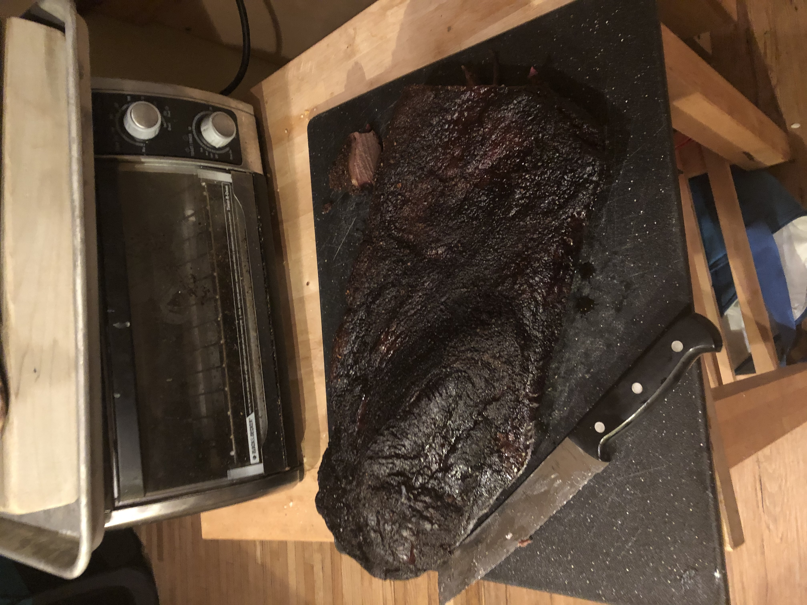

Texas Brisket

Description
Yeehaw!
Ingredients
- One packer brisket
- Lots of salt, kosher
- Lots of pepper, Telicherry
Steps
- Watch Franklin BBQ youtubes and read the book.
- Trim brisket as per Franklin BBQ.
- Liberally apply salt and pepper "rub".
- Smoke at 250F in Traeger for 12 hours until internal temp reaches 210F. Spray with apple cider vinegar as needed.